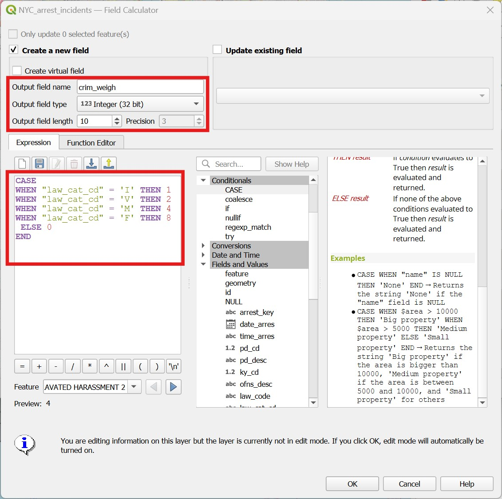

13 Lab 13 - Densities and distances
13.1 Guided Exercise 1 - Obtaining and organising the data
For this set of exercises, we will be working with crime occurrence data for the city of New York (USA), for the year 2023. You have been hired to support an analysis of NYC criminality to help better manage police resources and reduce crime.
The data package for this exercise can be downloaded here, and has been obtained from City of New York Police Department website and the NYC Open Data hub, and contains the following:
Arrest incidents for the year 2023, as a point vector shapefile - derived from a shapefile containing all arrest incidents from 2013 to present.
A polygon vector shapefile with the boundaries for the NYC neighbourhoods.
A polygon vector shapefile with the boundaries of each Police Precinct in NYC. Each police precinct is the responsibility of a different police team.
A point vector shapefile with the locations of all police stations in NYC. Most precincts have one station, with a few exceptions for additional speciality police stations such as mounted police.
- Download and extract the data package, and create a new folder and QGIS project for this lab. Import all three layers to your project. If you wish, add the OpenStreet Map or some other web layer from the
QuickMapServicesplugin to help with context and navigation.
Zoom to the full extent of the arrests layer - can you spot a problem with it? How can you fix it?
13.2 Guided Exercise 2 - Looking for crime hotspots
The first question you have been asked is where are the crime hotspots in the city, meaning the areas with the largest density of occurrences. The word density usually refers to a count of things divided by some area or volume measurement. For example, population density is number of people; oxygen density in normal atmospheric conditions is 1.43 grams / litre.
In GIS, density will be usually related to counts of things over areas; the more ‘things’ happen per unit area for ex. km\(^2\), the higher the density. This is often called Hotspot analysis in GIS, where the hotspots are areas of remarkably high density. And the main tool used for that is known as Kernel Density Estimation (KDE). I have made a video explanation on KDE that you can watch on Canvas.
- The first way to generate a density map is to use change the layer
Symbology. Select the crime layer and go toProperties > Syymbology, then change the symbology type fromSingle SymboltoHeatmap. PickRocketas theColor ramp, and aRadiusof 1000meters at scale(change frommillimiters). ThenApplyandClose. To add some context, place the boroughs layer on top of it, with no fill and a bright yellow outline.
Based on the hotspot map, which police precincts seems to have their hands full with crime occurrences? And what neighbourhood is it?
What is the CRS of the datasets (which should be also set as the CRS for the project)? What datum, projection and coordinate system does it use?
The heatmap symbology is useful for a quick inspection, but it is also restrictive. It would be more useful if the heatmap was an actual layer. We can create such permanent heatmap using the Heatmap (Kernel Density Estimation) tool in the Processing panel, under the Interpolation category. Once you open it, it will give you a few more options than the symbology route, in the following window:
Pick the crime layer as your
Point Layer, then set a radius of 1000meters(or 1kilometers). One important additional option here is that we get to set the resolution (pixel size) of our output raster density map. Smaller pixels will look smoother, but will result in larger files and longer processing times. The units here are the same as the layer CRS, so let us use50meters for bothXandY. Leave theKernel Shapeas quartic and the other options as default. Save your result in an appropriate location with the namecrime_density_1km_quartic_50m.tif.Notice how the output of
Heatmap (Kernel Density Estimation)is a raster, and that nodata values are used for regions that not within 1km of any point (unlike theHeatmapsymbology, which paints everything as a zero). Since it is a raster, we can style it with symbology options just the same as any raster. Pick aSingleband pseudocolorcolour ramp for your hotspots, and use the same ramp you used for theHeatmapsymbology.
Does the heatmap produced as a layer look the same as the heatmap produced by the symbology?
To demonstrate the above, generate a second heatmap layer, this time using 5km as
Radius, aPixel sizeof100metres, theUniformkernel shape, andScaledoutput values. Not only the layer looks very different, but the actual location of the hotspots seem to have changed, and the density units are also very different. It always takes a lot of trial and error to converge on a KDE estimation that is sensible for the problem at hand.If you’d like, try different combinations of radii, kernel shapes and pixel sizes. Once you are done, remove them all from your project, leaving only the first density map we created (radius 1000, quartic kernel, pixel size 50m).
To make the hotspot layer look better, create a new layer by using
Dissolveon the precincts or neighbourhood layers, thenMaskthe density raster to the boundaries of NYC only.We can now use tools we already know to associate the crime density information to the precincts and neighbourhoods. Using
Zonal Statistics([#sec-spatan3]), extract themeanandmaximumdensity values for each precinct. Then make one visualization colouring the polygons by average crime density, and the other by maximum crime density. Repeat the analysis for the neighbourhoods polygon.
Which precinct and neighbourhood seem to be the most problematic in terms of crime, i.e. have the highest average and/or maximum crime density?
13.3 Guided Exercise 3 - Looking more closely
Our incident dataset however includes several types, from traffic violations, to serious crimes. The law_cat_cd field contains codes indentifying the type of incident.
What are the unique existing values for the law_cat_cd field?
It may be that if we give different weights to crime according to their seriousness, our results change. But for that, we need a numeric attribute that indicates the weight to be given to each type of crime. To do that, we will learn a new function that can be used in the Field Calculator, the CASE WHEN conditional operator.
- Open the attribute table for the arrest incidents layer, and then open the
Field Calculator. Then enter theCASEexpression like shown on the figure below. The syntax is quite self explanatory: once you typeCASE, you open what we call a block. Inside the block, you then list a series of conditions (i.e. cases) for what value the new attribute should have for different values oflaw_cat_cd. At the last line in the block you add theELSEoperator, meaning that if none of the cases is matched, then the new attribute should have a value of 0. That would include the ‘NULL’s and the ’9’ values that are not informative to us. You then close the block withEND. We have more than 600k entries, so it will take a while!

- Now repeat the
Heatmap (Kernel Density)calculation you did before, using aradiusof 1000 meters, 50m ‘X’ and ‘Y’ pixel sizes, theQuarticKernel ShapewithRawvalues, but this time pick the newcrim_weighfield forWeight from Field. Save your results with an informative name such ascrime_density_1km_quartic_50m_weighted.tifand check the results.
How much did the results change?
13.4 Guided Exercise 4 - Visualizing densities as isolines
Isolines or ‘contour lines’ are lines that delineate areas within the same ranges of values. The most common use for them is to indicate topography:

However, we can use isolines to show any type of continuous value surface. For weather prediction, for example, contour lines indicating zones of equal pressure are called isobars :

We can therefore, visualise density maps as contour lines. This has the advantage of making it easier to overlay on top of other information. To create an isoline map from our crime hotspots, we have two options. The first is to use the Symbology, the second is to create a new layer.
The density values on our crime density layer are very small, and that may throw the symbology options off. So we will first scale the densities to a relative percentage. First go to the
Processingpanel and find theRaster Layer Statisticstool. Use it to find the maximum density value for the layer. Mine was 0.09126630425453186. Then head to theRaster Caclulatorand create a new layer namedrelative_density.tif, by dividing all pixels of the crime density layer by the maximum ("NYC_crime_heatmap_1km_quartic@1" \ 0.09126630425453186in my case, but your layer may be named differently.)Select the new relative crime density layer you created and go to
Properties > Symbology. It should be set tosingleband gray- switch the symbology type toContours. The default values for the contours and the index contours are too high (they are adjusted for elevation), so let us use 0.1 as the contour interval, and 0.5 as the index contour. Pick a colour for the isolines that differentiates well from the colour palette of your density layer, and overlay both. Now make a map that uses only the contours to show the crime hotspots over the OpenStreetMap layer, together with the Neighbourhood layer.Now turn off this contour styled layer, and instead go to
Raster > Extraction > Contour.... Pick your relative density layer asInput Layer, and 0.1 as theInterval between contour lines. For attribute name, enterREL_DENS, leave the rest as default and save the result asisolines_relative_density.shp. The output should be identical to the symbology option, but it will a new line vector layer that can be treated as any other layer.
Challenge: can you add labels to the contour lines using the label options in QGIS?
13.5 Guided Exercise 5 - Distance to Hubs
Continuing with our crime analysis, we now want to get insights on possible response times to incidents, based on the distance from police stations. There are different ways to represent and explore distances in GIS, and we already explored one of them: buffers. You can create buffers that represent specific distances, and then use these buffers to count ocurrences within the range.
Can you calculate the percentage of crime incidents in the dataset that happened within 1 km of a police station? Hint: Buffer and Count Points in Polygons should do the trick.
But now let’s say we want to know the average distance of a crime incident to the nearest police station. For this, we would need to know the exact distances for each point, and buffers won’t give us that. The tool we want in that case is Distance to the Nearest Hub (Points) tool, in the Processing panel.
Open the
Distance to the Nearest Hub (Points)tool in theProcessingpanel. Then pick the crime incident layer as theSource Points Layer, and the police station layer as theDestination hubs layer. PickFACNAMEas the hub layer name attribute (the name of each police station), andMetersas theDistance unit, save it ascrime_incidents_with_hubs.shp, thenRun. It will take a while (after all, QGIS needs to look into each of the 616835 crimes one by one and determine which police station is nearest).Now open the attribute table of the new layer your created. It should have all the original attributes of the crime incident layer, plus two new attributes at the end:
HubNameandHubDist. You can then use theSummary Toolto find out the average for theHubDistattribute, and answer the question above (I got 749 meters). And since the name of the police station is also brought to the table, you could useStatistics by Category(Processingpanel) to calculate the total or average number of nearest crime incidents per police station - that could give insight in how overwhelmed some stations could be in relation to others. Or you could calculate the average distances to each hub, and have an idea of which police stations are being responsible for covering the largest areas.
13.6 Guided Exercise 6 - Distance Maps
There are times, however, where you want to create a distance map - a layer that shows for every location how far it is from something else. For example, if you were planning the location to install a new wind turbine, you may want to prioritise areas that are closer to a power line. In our crime example, maybe we want to identify regions in the city that are too far away from any police station - and therefore good candidates for creating a new one. The tool for that is called Proximity (raster distance) in QGIS. This tool however only works with rasters, so we need to convert our police stations into a raster first
Go to
Raster > Conversion > Rasterize. Then pick the police stations asInput Layer, and1as aFixed value to burn. then pickGeoreferenced UnitsforOutput raster size units, pick50for both horizontal and vertical resolution (those would be meters), and set theOutput Extentto match the neighbourhoods layer extent - click ion the small down arrow, then pickCalculate from layerand select the neighbourhoods layer. This option determines how large your raster will be. Set theOutput data typetoByte, and then save the result aspolice_stattions.tif. You will get a raster with a pixel value of1wherever a police station exists, and zero (which is the defaultnodataoption, so it will show as such) otherwise.Now open the
Proximity (raster distance)tool in theProcessingpanel, underRaster Analysis. Pick the rasterized police stations as theInput Layer, and add the number1as theList of pixel values....option. Change the distance units toGeoreferenced coordinates, leave the rest as default, and save the output asdist_from_police_Stations.tifandRunit. The resulting layer is a raster map where the pixel values represent actual distances from a police station.
- raster calc to density cutoff and ditance cutoff ad example of multicriteria analysis